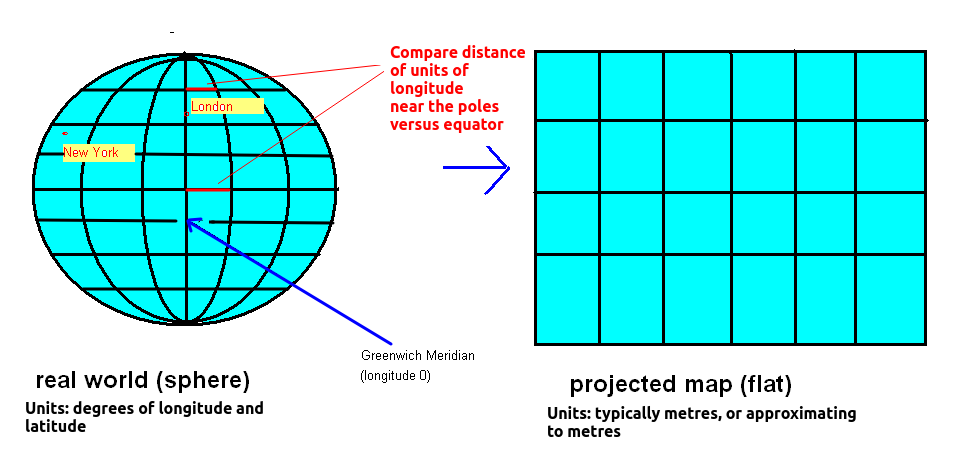
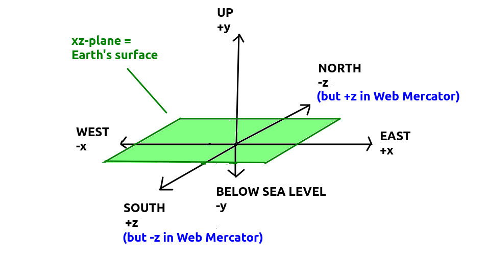
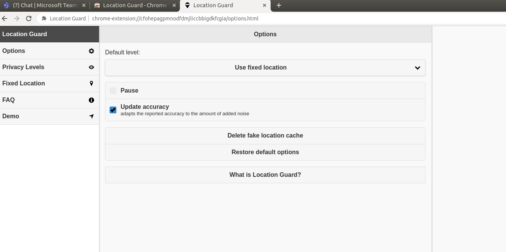

This week we will:
Last year in COM518 (see here) we looked at AJAX and saw that it was an approach to developing highly interactive web applications which communicate with the server in the background, without the page being reloaded. So, with AJAX we can create interactive, instant searches (such as that seen on Google) for example. Your JavaScript code sends a request, and the server sends data back, typically in a pure-data format such as JSON (see here for more information about JSON). The JSON is then parsed and the page dynamically updated with the new data.
This week we are going to look at AJAX and JSON in combination with A-Frame or three.js. Your A-Frame or three.js application will connect to a web API via AJAX. The web API will send back a specific form of JSON (called GeoJSON) which we will examine later. We can then dynamically create A-Frame entities or three.js meshes using the data contained within the GeoJSON.
Please note; this was first covered in COM518 last year.
In order to understand location-based applications, it is important to understand the coordinate system used on the earth. The most common coordinate system uses latitude and longitude. Latitude is a measure of how far north or south you are: the equator is at 0 degrees, while the North Pole is at 90 degrees North, we are at about 50 and Spain is at about 40. Longitude is a measure of how far east or west you are: 0 degrees of longitude is referred to as the Prime Meridian (or Greenwich Meridian) and passes through Greenwich, London. By contrast Germany is located between approximately 7 degrees and 15 degrees East, while New York is at 74 degrees West and the west coast of North America at approximately 120 degrees West.
So a given point on the earth can be defined via its latitude and longitude. We are at, approximately, 50.9 North (latitude) and 1.4 West (longitude). By convention, latitudes north of the equator and longitudes east of Greenwich are treated as positive, so we can also define our position as longitude -1.4, latitude +50.9.
An important consideration when doing web mapping is that the earth is not flat (it's more or less a sphere) while maps are flat. To display a curved surface on a flat piece of paper, or a 3D world via three.js or A-Frame, we need to do a projection and mathematically transform the latitude and longitude to coordinates suitable for representation on a flat surface. Why is this? Imagine any printed map of the earth. The map is equal width everywhere, from far northern areas such as Greenland or north Norway, to the equator. This does not match reality; since the earth is (more or less) a sphere, the circumference of the earth will be much greater at the equator than those far northern areas - indeed, at the poles, the circumference of the earth is zero!
For this reason, latitude and longitude must be transformed to so called projected coordinates if we want to represent them on a flat surface, such as the ground of a 3D world. The details of exactly how this projection is done is out of scope of this module, as we will be using a library.
The most common projection used with web mapping is referred to as Web Mercator (a type of Spherical Mercator). This is sometimes informally known as the "Google Projection" because Google popularised it with Google Maps.

When developing a 3D OpenGL application, using three.js or A-Frame, we need to use projected coordinates, not latitude and longitude. One unit (degree) of longitude is not equal in distance to one degree of latitude, and furthermore, as can be seen from the diagram of the Earth above, one degree of longitude covers a different distance depending on where you are on the earth. At the poles, one degree of longitude has a distance of zero, as all the lines of longitude meet there. As you move towards the equator, the circumference of the earth at that latitude increases, to reach a maximum at the equator. So at the equator, one degree of longitude occupies a greater distance than at any other location.
By contrast, Web Mercator units approximate to metres, at least away from far north or far south latitudes. So we can use Web Mercator units, together with elevation above sea level in metres, as 3D coordinates in a 3D world in three.js or A-Frame. Web Mercator coordinates contain two components: easting (a measure of how far east you are, equivalent to longitude) and northing (a measure of how far north you are, equivalent to latitude).
There is a common convention for relating OpenGL world coordinates to Web Mercator eastings and northings, which is to map eastings to the x axis, northings to the z axis and elevation above sea level to the y axis. This is shown on the diagram below.

It can be seen that the OpenGL coordinate system maps nicely onto the Web Mercator system using this convention. However there is one problem. Web Mercator northings increase as we go north, and decrease as we go south, with the equator at northing 0. However, with the OpenGL coordinate system, if we assume +x is east and -x west, then -z will be north and +z will be south, according to the diagram above. So the sign of the z axis is the opposite to the sign of Web Mercator northings. So, when using Web Mercator northings for the z coordinates of our 3D world, we need to remember to reverse the sign.
Using mathematical formulae, latitude and longitude can be converted to Web Mercator. However, because it is a common operation, various libraries can do it for you. We will use the library jsfreemaplib. Here is an example:
import { GoogleProjection } from 'jsfreemaplib';
// Create a GoogleProjection object. This object is responsible for conversions
// between lon/lat and Web Mercator (aka 'Google Projection')
const merc = new GoogleProjection();
const lon = -0.72;
const lat = 51.05;
// project the lon and lat into Web Mercator.
// returns an array with two members, first is easting and second is northing
const projected = merc.project(lon, lat);
// Output the easting and northing, and corresponding x and z coordinates,
// remembering to change sign of the northing before using it for a z coordinate
console.log(`Easting: ${projected[0]}, x: ${projected[0]}, northing: ${projected[1]}, z: ${-projected[1]}`);
You should install jsfreemaplib from NPM. In your package.json, specify version 0.4.0 or greater, e.g.:
{
"dependencies": {
"jsfreemaplib", "^0.4.0",
...
},
...
}
The Geolocation API allows you to obtain the current location of the device running the browser from within JavaScript. Even on desktop browsers this will give a result if you are using a wireless network, but its real use is in the mobile web development world. A mobile browser can talk to the GPS chip of the phone and obtain the phone's current location on the earth. Alternatively, if the GPS chip is not available, a rough estimate can be obtained from cell towers or wireless networks.
It is fairly straightforward to use the Geolocation API. Here is an example (please note - all examples in this topic will show the JavaScript only, not the HTML):
if(navigator.geolocation) {
navigator.geolocation.getCurrentPosition (
gpspos=> {
console.log(`Lat ${gpspos.coords.latitude} Lon ${gpspos.coords.longitude}`); // show on the console
},
err=> {
alert(`An error occurred: ${err.code}`);
}
);
} else {
alert("Sorry, geolocation not supported in this browser");
}
How is this working?
The above code will simply obtain the current position and stop. In a typical mobile GPS application, however, the user will want to be informed of their location on a regular basis. To do this we use watchPosition() in place of getCurrentPosition(). Here is an example:
if(navigator.geolocation) {
navigator.geolocation.watchPosition (
gpspos=> {
console.log(`Lat ${gpspos.coords.latitude} Lon ${gpspos.coords.longitude}`); // show on the console
},
err=> {
alert(`An error occurred: ${err.code}`);
},
{
enableHighAccuracy:true,
maximumAge: 5000
}
);
} else {
alert("Sorry, geolocation not supported in this browser");
}
Note that the code is almost the same as the first example, except:
For security reasons (the risk of your location being intercepted by packet-sniffers) the Geolocation API now requires the use of an HTTPS server (a web server with encrypted communication), on both Chrome and Firefox. If you are running on localhost (your own local machine), however, HTTPS is not needed.
See Let's Encrypt for information on setting up an HTTPS server.
What format does this API return? It returns a specific JSON format known as GeoJSON (see geojson.org). GeoJSON is designed to represent geographic data in a standard way.
GeoJSON consists of a series of objects. These are:
Here is an example of some GeoJSON.
{
type: "FeatureCollection":
features:
[
{
type: "Feature",
geometry:
{
type: "Point",
coordinates: [-0.72, 51.05]
},
properties:
{
poiType: "pub",
name: "The Red Lion"
}
},
{
type: "Feature",
geometry:
{
type: "Point",
coordinates: [-0.9, 51.1]
},
properties:
{
poiType: "restaurant",
name: "Sams Burger Joint"
}
},
{
type: "Feature",
geometry:
{
type: "LineString",
coordinates: [
[-1, 51],
[-1.01, 50.99],
[-1.01, 50.98],
[-1.02, 50.97],
[-1.04, 50.96]
]
},
properties:
{
poiType: "main road",
number: "A987",
name: "High Street"
}
}
]
}
Note how this GeoJSON consists of a FeatureCollection. The
FeatureCollection in turn contains an array of Feature objects,
each of which contains three fields:
So, to parse this GeoJSON from JavaScript, you could use code such as:
// Await a response from the GeoJSON API
const response = await fetch('GeoJSON API');
// Parse the JSON.
const parsedJson = await response.json();
// Loop through each feature in the GeoJSON.
parsedJson.features.forEach ( feature => {
// Print the name
console.log(`Name: ${feature.properties.name}`);
// If it's a point, print the coordinates
if(feature.geometry.type == 'Point') {
console.log(`Longitude: ${feature.geometry.coordinates[0]}, latitude: ${feature.geometry.coordinates[1]}`);
}
});
The exercise is to bring this all together and dynamically create a scene by contacting a web API to retrieve JSON. At the URL
https://hikar.org/webapp/map/peaks?bbox=west,south,east,north(where
west, south, east and north are the west, south, east and north bounds of the area to download) is a server-side application which returns JSON of mountain peaks from OpenStreetMap.
To test a peak finder, the university is obviously not a very mountainous location so you need to fake a mountainous location. Furthermore, on a desktop or laptop, you will not get a reliable location anyway because these machines do not have a GPS chip.
How can we fake our location? You can download the Location Guard extension for either Firefox or Chrome. This will allow you to set a fake location for your browser, which will be reported when the Geolocation API is used in any application. (This also has the side-effect of hiding your real location from websites which may wish to gather this information for less-than-ethical purposes).

After you install, you will see a screen rather like the above. Select Fixed Location. This will give you a map which you can drag. Move to somewhere mountainous in Europe or Turkey, which are the areas covered by the server. A suggestion for a fake location is latitude 47.45, longitude 11.05 - this is an area with many mountains.
Then, once you have chosen a fake location, select Options and then choose "Use fixed location" for "Default level", as shown below.

Build an A-Frame or a three.js application which contacts this
URL, and downloads the data from it (using the fetch API). You will need to use Location Guard, see above, to ensure you fake your location to somewhere mountainous. If using A-Frame, create a component to do this, attach it to your scene, and add the code to the init() method, i.e.
AFRAME.registerComponent("downloader", {
init: function() {
// put your code in here...
// Note how the geolocation callback function is declared async to
// allow us to use await for the fetch call
navigator.geolocation.getCurrentPosition(async(gpspos) => {
//...
});
}
});
In pure three.js, you can add the download code any time after your scene is loaded.
The steps you need to take are:
https://hikar.org/webapp/map/peaks?bbox=11,47.4,11.1,47.5To view the JSON nicely formatted I would recommend installing an extension such as JSON Viewer for Chrome.
document.querySelector("[camera]").setAttribute("position", {
x: mercatorEasting,
y: 0,
z: -mercatorNorthing
});
Note how in this code we ding the camera with the square brackets syntax [camera]. Square brackets in CSS select any element with that attribute present. In A-Frame this is equivalent to selecting an entity with the given component present. So here, we are selecting the entity which contains the camera component, i.e. our camera entity.
getCurrentPosition() and not watchPosition()! While in a real app you would probably use watchPosition() I don't want my server being bombarded with requests during the lab session!const response = await fetch(`https://hikar.org/webapp/map/peaks?bbox=${west},${south},${east},${north}`);
where west, south, east and north are the bounds of the area to download.
ele) of the peak appears when you click on it. You should be able to work out how to do this from the mouse events section from week 5. Note that you will need an additional raycaster component added to the scene. The raycaster component defines the start (near) and end (far) distance of the ray cast from the mouse position which is used to detect mouse clicks. You should set the end distance to 10000 units to detect peaks up to 10km (10000m) away, e.g.
<a-scene cursor='rayOrigin: mouse' raycaster='near:0.1; far: 10000'>
Next week, week 8, we will look at tiling which is the most efficient way of downloading the data from the server. However here is a quick preview, to allow you to start looking at the assignment if you are doing the Points of Interest scenario. The URL to use will be
https://hikar.org/webapp/map/Z/X/Y.poi.jsonwhere Z, X and Y are the coordinates of the data tile to use. (A tile is a rectangular area covering part of the Earth). To obtain the tile for a given latitude and longitude, you can use
jsfreemaplib again, e.g.:
import { GoogleProjection } from 'jsfreemaplib';
const merc = new GoogleProjection();
// Use zoom level 13 - this is a good size
// assume 'longitude' and 'latitude' contain your current longitude/latitude
const tile = merc.getTileFromLonLat(longitude, latitude, 13);
// tile is an object of class Tile. It has x, y and z properties
// These can be used to download data from the assignment URL
console.log(`Tile x: ${tile.x}, y: ${tile.y}, z: ${tile.z}`);